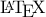

Bibover is a bibtex extension for Jemdoc, which provides “floating” references. Bibover is heavily inspired by and borrows from Truong X. Nghiem’s Jemdoc export filter for JabRef.
A few example references, e.g. my PhD thesis[Grunnet 2009] or an article about control theory [Bemporad and Morari 1999] and maybe even the trusty old dog book .
In order to use Bibover you need Jabref, which is a BibTex reference database, and of course the Bibover package.
Before you get started you need to add the JabRef export filter named bibover.layout to JabRef. Please refer to the JabRef manual for help on this step, but I recommend that you chose .jeminc as the file extension.
Export the references you want available in your Jemdoc document.
Copy bibover.css to your html folder.
Make sure bibover.conf is somwhere in Jemdoc’s search path e.g. in the same directory as your source files.
Add #jemdoc: addcss{bibover.css} to your document.
Add #include{exbib.jeminc} to your document, where exbib.jeminc is the filename of your exportet BibTex entries.
Add any citations you want as [javascript:cite(’bibkey’) mark] where bibkey is the BibTex key of the entry you want to refer to and mark is what you want the reference to appear as in your document.
Compile your jemdoc file with jemdoc -c bibover.conf file.jemdoc.
For an example, see the source of this page.
Control of systems integrating logic, dynamics, and constraints
Bemporad, A. and Morari, M.
Automatica, 1999, Vol. 35, pp. 407-427
[BibTeX]
@article{mld,
author = {Alberto Bemporad and Manfred Morari},
title = {Control of systems integrating logic, dynamics, and constraints},
journal = {Automatica},
year = {1999},
volume = {35},
pages = {407-427}
}
Automated Controller Synthesis for non-Deterministic Piecewise-Affine Hybrid Systems
Grunnet, J.D.
The Doctoral School of Engineering, Science and Medicine, Aalborg University, 2009
[BibTeX]
@phdthesis{grunnet:PhD,
author = {Jacob Deleuran Grunnet},
title = {Automated Controller Synthesis for non-Deterministic Piecewise-Affine Hybrid Systems},
school = {The Doctoral School of Engineering, Science and Medicine, Aalborg University},
year = {2009}
}